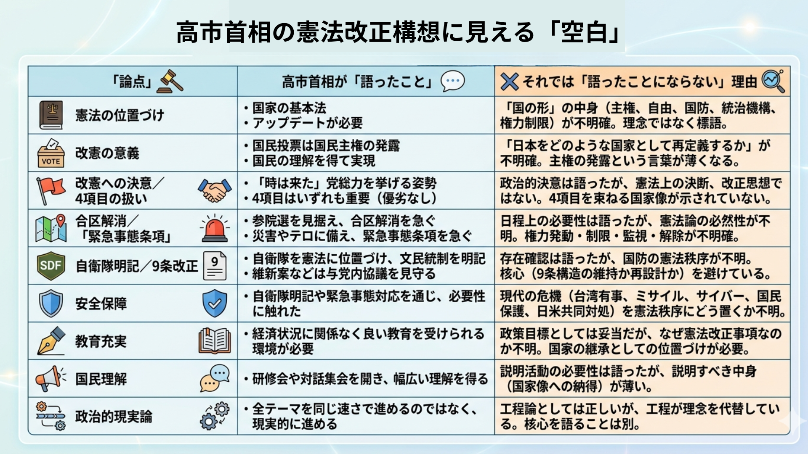

憲法を「アップデート」と呼んだ瞬間、国家の根本文書は少し軽くなった。
高市早苗首相は、憲法記念日を前にした産経新聞の単独インタビューで、憲法を「国の形を示す国家の基本法」と位置づけ、国際情勢や社会の変化に応じた改正の必要性を語った。国民投票こそ国民主権の最大の発露だとも述べた。改憲への意思は明瞭である。自民党総裁として、発議と国民投票へ党の力を注ぐ覚悟も示した。
だが、問われているのは、高市首相が改憲に熱心かどうかではない。憲法を変えることで、日本という共同体の何を守り、何を改め、何を次代へ渡そうとしているのかである。
首相は、憲法を「国のかたち」だと語った。ならば、その形とは何か。主権者、天皇、国会、内閣、司法、地方、国防、自由。これらをどのような均衡の中に置くのか。そこを語らぬまま「アップデート」と呼べば、憲法はソフトウエアの更新履歴に近づいてしまう。国家の根本文書は、便利に書き換える操作盤ではない。共同体の骨格である。
合区解消——「地方」の意味を問え
自民党が重視する改正の4項目は、自衛隊明記、緊急事態条項、合区解消、教育充実だ。いずれも軽い論点ではない。だが、それらを貫く統一原理がまだ見えないことから、軽いもののように映る。
合区解消は、その典型である。人口減少地域が国政から遠ざかることは、単なる選挙制度上の不便ではない。地方の声が細れば、国土の感覚も細る。国境離島、中山間地、農山漁村、災害常襲地域、港湾や発電施設を抱える地域は、東京の会議室では見えにくい国家の現場である。そこに住む人々の声が、人口比例の算術だけで薄められてよいのか。この問いは、憲法問題そのものである。
ならば、合区解消を「次の参院選に間に合うか」という日程だけで語ってはならない。参議院とは何のためにあるのか。衆議院が人口比例を強く映す院であるなら、参議院は地域、時間、熟議を代表する院なのか。都道府県は単なる行政区画なのか、それとも明治以来、国土統合と地方自治を支えてきた政治的単位なのか。ここまで語って初めて、合区解消は「国の形」の論点となる。
保守政治が地方を語るなら、票の配分だけを語ってはならない。地方とは、効率で整理される区画ではない。人が生まれ、働き、老い、災害に耐え、墓を守り、祭りを続ける場所である。保守が守るべきものは、抽象的な制度だけではない。世代をまたいで受け渡される共同体の実在である。エドマンド・バークが革命の熱に抗して見たものも、まさにこの継承される共同体の重みであった。

緊急事態条項——権力に縛りをかけよ
緊急事態条項についても同じである。大規模災害、テロ、感染症、サイバー攻撃、周辺有事への迅速対応は、国家に不可欠である。平時の手続きだけで非常時を乗り切れると考えるのは、政治の怠慢である。
しかし、緊急事態条項は、国家権限の拡大条項ではなく、国家継続と権力統制の条項として設計されねばならない。非常時に必要なのは白紙委任ではない。誰が、いつ、どの権限で、どの限界の中で国民を守るのかを明らかにすることである。発動要件、期間制限、国会承認、解除手続き、司法の関与、いかなる危機にも侵してはならない自由。ここを曖昧にした条項は、保守ではなく権力便宜主義に近づく。
さらに、有事は改憲を待たない。仮に明日、日本周辺で深刻な危機が起きれば、政府は現行憲法のもとで対応するほかない。ミサイル攻撃、サイバー攻撃、海底ケーブルの切断、台湾有事に伴う邦人退避、南西諸島の住民避難、電力・通信・金融網への同時攻撃。危機は、条文が想定した順序で来ない。そのとき政治責任者は「憲法が整っていないから守れない」とは言えない。
だからこそ、政治指導者に問われるのは条文案だけではない。未整備の制度の中で、どこまで国家権力を動かし、どこから先を越えてはならないか。その理念である。非常時の権力は、必要だから正当化されるのではない。必要性と限界を同時に語って初めて、憲法秩序の中に置かれる。
危機の政治で最も危ういのは、悪意よりも「仕方がない」という空気である。迅速対応だけが語られ、権力の限界が語られないとき、その沈黙は小さくない。沈黙は、次の危機で制度になる。ハンナ・アーレントの警告を借りれば、危うさは怪物の顔ではなく、日常の手続きと従順の中に入り込むのである。
自衛隊明記——防衛思想の空白を埋めよ
自衛隊明記にも同じ空白がある。戦後日本は、自衛隊に国家防衛の実務を担わせながら、その憲法上の位置づけを曖昧にしてきた。現場に責任を負わせ、政治が言葉を逃がしてきた面は否定できない。自衛隊を憲法に位置づけ、文民統制を明記することには意味がある。
だが、自衛隊を書き込めば、それだけで国家防衛の憲法秩序が立つわけではない。9条2項を維持したままの加憲で、実力組織の正統性と安全保障の現実を説明し切れるのか。専守防衛、反撃能力、日米同盟、国民保護、重要インフラ防護、サイバー領域の防衛を、どの原理で束ねるのか。そこを語らなければ、自衛隊明記は一歩ではあっても、防衛思想そのものにはならない。
工程論は理念を代替しない
もちろん、反論はある。憲法改正は理念だけでは進まない。衆参両院の3分の2以上の賛成が要り、その後には国民投票がある。野党との協議も、連立内の調整も、国民への説明も欠かせない。ならば、合意しやすい項目から進めるのは当然ではないか。最初から国家像の全体を語れば、合意は遠のく。政治は理想ではなく工程であり、勝てる順番で進める技術でもある。
この反論には正しさがある。理念だけを掲げ、1ミリも現実を動かせない改憲論は、政治ではなく祈願である。憲法審査会で「議論のための議論」が続いてきたという苛立ちも理解できる。高市首相が「結論のための議論」を求めること自体は、停滞する政治への挑戦でもある。
だが、工程が必要であることと、国家像を語らなくてよいことは別である。むしろ、工程を急ぐほど理念は深くなければならない。国民投票で問われるのは、どの文字を足すかだけではない。この変更を通じて、日本はどこへ向かうのかである。
高市首相の問題は、改憲意欲の不足ではない。意欲は強い。問題は、その意欲を支える言葉が、なお政治工程の言葉にとどまっていることだ。発議、合区、緊急事態、4項目、各会派との連携、国民理解。いずれも必要である。だが、それらは手段であり、部品であり、道筋である。核心は、日本という国家をどのような秩序として描くかにある。
日本が今問われているのは
保守政治とは、国家を強く語ることではない。国家を強くしながら、国家を縛る知恵を持つことである。危機を危機として認識しながら、危機を理由に制度を壊さないことである。改革を恐れず、同時に破壊の速度を恐れることである。国家を愛する情熱と、権力を疑う冷静さを同じ胸に置くことである。
「アップデート」は、現代的で、耳ざわりのよい言葉である。だが、憲法に必要なのは軽快さではない。継承と変更を峻別する重さである。何を時代に合わせるのか。何を時代に合わせてはならないのか。その線を引くことこそ、政治の責任である。
高市首相が本当に憲法を「国の形」と考えるなら、改めるべき条文の前に、守るべき国の像を示さねばならない。合区、緊急事態、自衛隊、教育。どれも軽い論点ではない。軽くしているのは、それらを束ねる言葉の不足である。
憲法改正は、政治日程の勝利であってはならない。日本という共同体が、危機の時代に何を恐れ、何を守り、どの自由を次代へ渡すのか。その問いに答えぬままの改憲は、国家の更新ではなく、条文の整備に終わる。
「国のかたち」と言うなら、その形を首相自身の言葉で語る責任がある。改憲の核心は、そこにある。